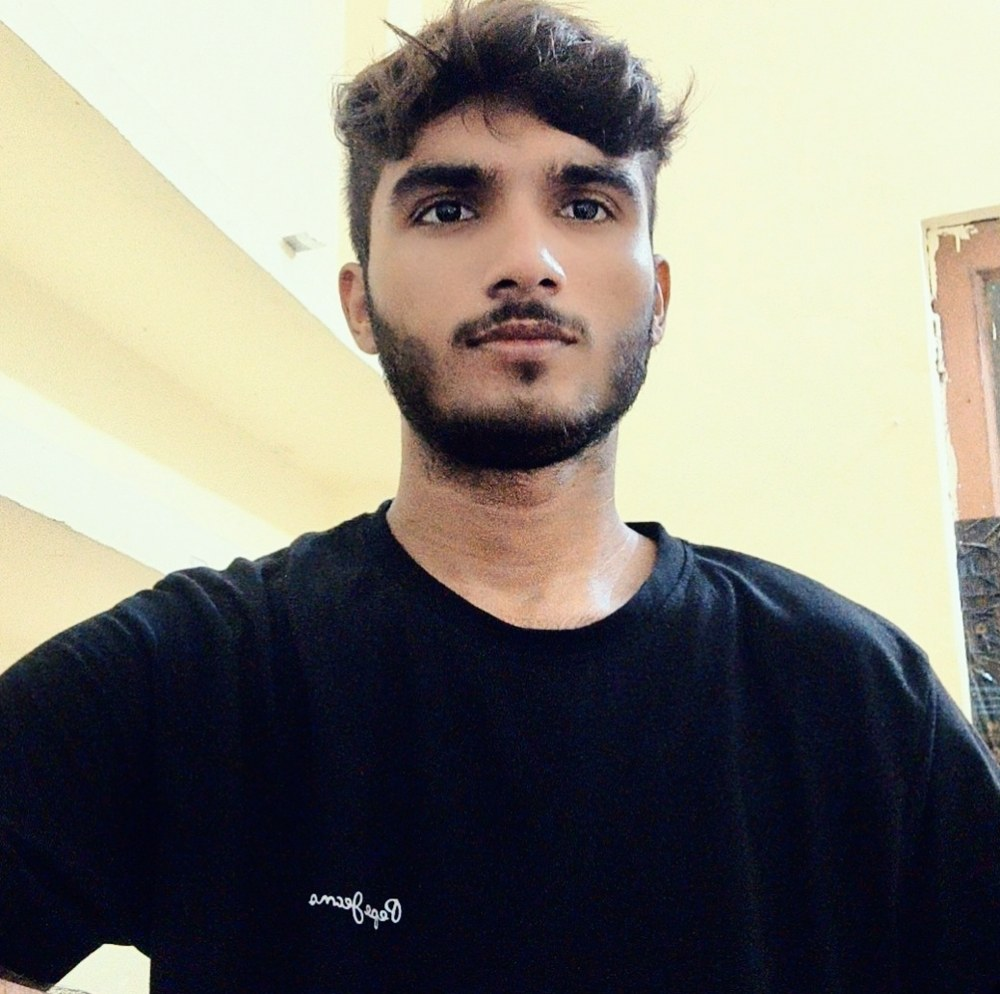

Data modeling
Structuring data so it answers real questions.
About me

I'm Ansh, a Data Science & AI student at IIT Guwahati with a diploma in Information Technology from the Board of Technical Education, Uttar Pradesh.
I'm a Student Trainee with ISEA Stay Safe Online, where I work on cyber security initiatives that push secure digital practices forward. My goal is to become a CISO: someone who combines ethical leadership, risk management and defensive strategy.
Before that I led a student team at E-Cell, IIT Bombay, running workshops and events, and interned at Softpro India building live web apps with Python and Django. I enjoy the unglamorous parts of projects too: debugging, testing and writing things down properly.
I'm based in Lucknow, Uttar Pradesh.
Toolkit
Structuring data so it answers real questions.
Turning numbers into something people act on.
Fast analysis, clean models, honest summaries.
Risk management and defensive practice.
Live web apps, debugging and testing.
Mentoring teams and shipping events on time.
Experience
Started the degree programme.
Aspiring CISO track: ethical leadership, risk management, cyber security innovation and strategic defence.
Directed and mentored a student team running workshops, events and innovation projects. Improved collaboration, resource allocation and deadline management.
Helped design and build live web apps with Python and Django. Contributed to debugging, testing and documentation.